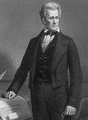

Andrew Jackson (1767-1845), 1829’dan 1837’ye kadar görev yapan, Amerika Birleşik Devletleri’nin yedinci başkanıydı. Amerika başkanlığını kazanmak için kesinlikle zamanının en sıra dışı adamıydı. Güney Carolina’da doğan Jackson, sadece on üç yaşındayken, İngilizler’le savaşmak için Kıta Ordusu’na katıldı. Amerika’nın bağımsızlığını takip eden yıllarda Tennessee’de bir hukukçu ve politikacı olarak çalıştı, sonrasında devlet milislerine tekrar katıldı ve 1812 Savaşı’nda New Orleans Muharebesi’nde İngilizler’e sürpriz bir zafer sağlayan Amerikan kuvvetlerini yönetti. Jackson’un askerî başarıları onu ulusal bir kahraman yaptı. Ama kaba biyografisi (Jackson, Tennesse’de düelloda çeşitli yasal muhaliflerini öldürdü ve boşanmış bir kadınla evlendi) onu 1829’a kadar Massachusetts ve Virginia elitinin soylu üyelerinin ağırlıkta olduğu başkanlık adaylığı için pek muhtemel olmayan bir isim kıldı.

Jackson kısmen kendi altyapısından dolayı, 1824’teki tartışmalı bir seçimde başkanlık yarışını Başkan John Adams’ın oğlu ve Massachusetts’ten siyasi bir ailenin asilzadesi olan John Quincy Adams’a kaybetti. O zaman Amerika başkanlık seçim sistemi, bugünkünden daha az demokratikti. Birçok eyalet, oy verenlere hiçbir söz hakkı vermiyordu. Onun yerine eyalet yasa koyucuları karşılığında Seçmenler Kurulu’nda başkanlık için oy veren seçicileri tayin ettiler. 1824’te halka oy hakkı iznini veren eyaletlerde Jackson, Adams’ı kolayca yendi. Ama Temsilciler Meclisi sonunda kazanana karar verdiğinde, onun yerine Adams’ı seçti.
Çileden çıkmış olan Jackson, sonraki dört yılını seçim sistemini daha demokratik hale getirmek için kampanya yaparak geçirdi. Amacını ilerletmek için yeni bir siyasî partiyi, Demokrat Parti’yi kurdu ve 1828 seçiminde Adams’ı rahatlıkla mağlup etti. Jackson’un seçimi Amerikan siyasi sisteminde bir yer değişimini müjdeledi. Artık varlıklı aristokratların Beyaz Saray üzerinde ayrıcalıklı hakları olamazdı. Başkan olarak Jackson’ın yerli Amerikalılar’ı Georgia’dan sürmek için uğraşması ve Amerika Birleşik Devletleri Bankası’nı lağvetmesi, onu oy kullanma hakkıyla yeni tanışan halk arasında popüler kılarak ulusun ilk Demokratik başkanı yaptı.
EK BİLGİLER:
1. Seçilmesinin 100. yıldönümü olan 1928’den beri Jackson’un yüzü yirmi dolarlık banknotları süsledi. Bu, Jackson’un, Federal Rezerv’in erken dönem öncüsü olan Amerika Birleşik Devletleri Bankası’na sert muhalefetine karşılık ironik bir onurlandırmadır.
2. Jackson, Thomas Jefferson örneğini takip ettiğini iddia etti; ama ağırbaşlı Virginialı, öfkeli Tennesseeli’nin hayranı değildi. Jefferson, Jackson hakkında “Tutkuları korkunç” diye yazdı ve “Tehlikeli bir adam” diye ekledi.
3. Başkan olarak Jackson, hiçbir eyaletin federal yasaları geçersiz kılamayacağını veya birlikten çekilemeyeceğini savundu. Birliğin dokunulmazlığı doktrini, Abraham Lincoln dâhil birçok Amerikalı’nın düşüncesinin şekillenmesine yardım etti.